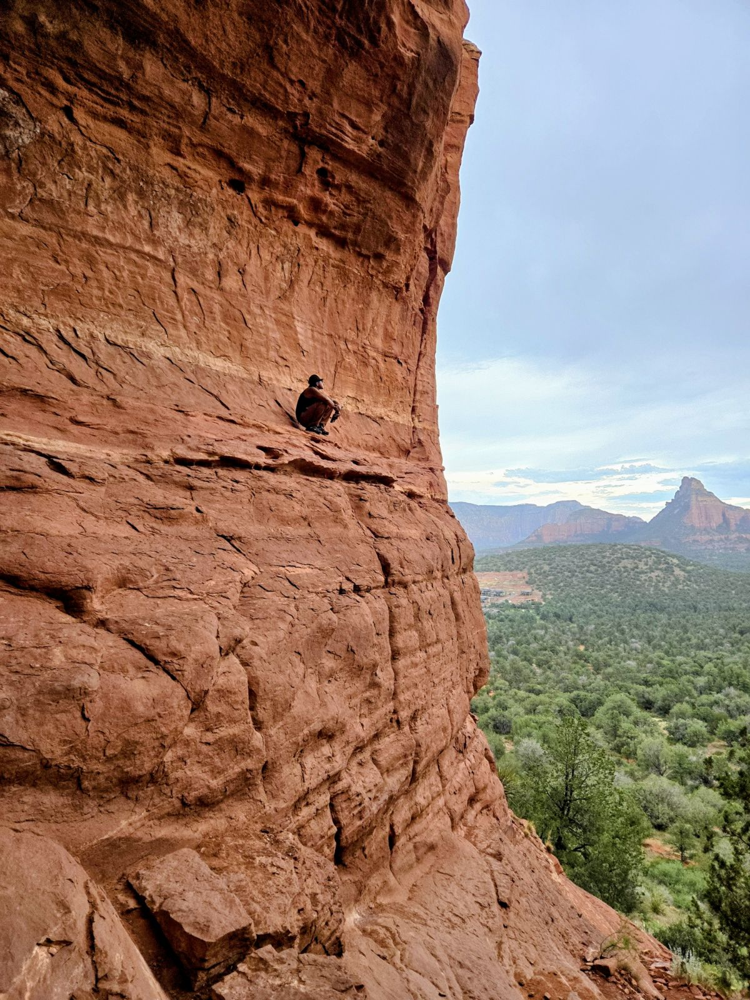

Dead Horse Ranch State Park, about 25 minutes from Sedona in Cottonwood, is where the desert meets the river — and the way to see it is on horseback. This two-hour guided ride winds through the park's desert trails and lagoons and crosses the Verde River itself, hooves in the water, under the cottonwoods.
The horses are trail veterans and the pace is beginner-friendly, which makes it the ride we point first-timers and families to — with scenery that keeps experienced riders happy too.